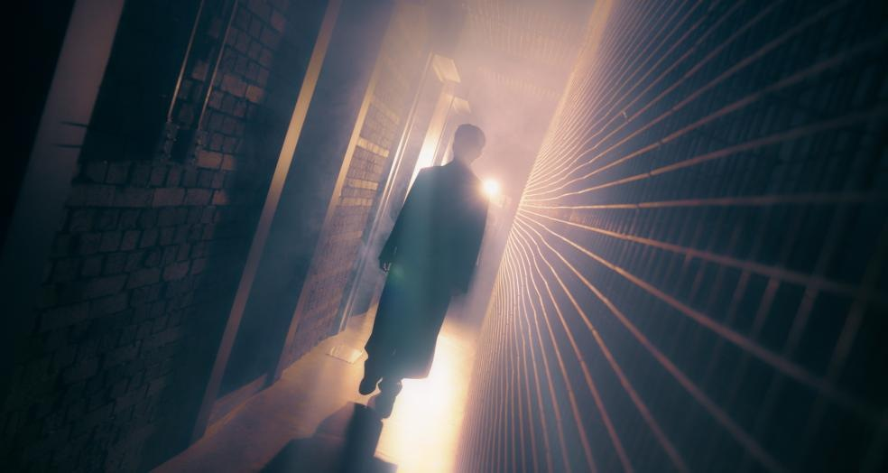

01 / SELECTED WORK
이야기를 콘텐츠로
만드는 일.
브랜드필름부터 기업 홍보와 공연까지.
홀린의 다양한 제작 프로젝트를 만나보세요.
02 / WHO WE ARE
기획부터 완성까지,
올인원 프로덕션.
브랜드필름부터 기업 홍보, 공연과 라이브까지.
기획·촬영·후반 제작·현장 운영을 연결합니다.
보이지 않는 세계관을 영상으로, 빛과 소리를 하나의 무대로. 기획부터 제작, 연출까지 연결해 공연장 전체를 하나의 경험으로 완성합니다.
OUR EXPERTISEDESIGN YOUR DREAM.
03 / WHAT WE DO
하나의 비전.
완전한 프로덕션.
콘셉트에서 현장까지,
모든 과정이 같은 방향을 향하도록.
01CREATIVE DIRECTION
보이는 것 너머를 기획합니다.
콘셉트 기획부터 연출까지, 아티스트와 브랜드의 이야기에 가장 어울리는 시각적 언어를 설계합니다.
02MEDIA PRODUCTION
스크린의 경계를 지웁니다.
콘서트 오프닝과 VCR, 브랜드 필름, 퍼포먼스 비디오. 기획과 촬영, 후반 제작을 통해 몰입의 서사를 만듭니다.
03LIVE PRODUCTION
영상과 무대가 교감합니다.
콘서트, 팬미팅, 컨퍼런스와 기업 행사. 무대 연출과 현장 운영, 라이브 송출을 하나의 흐름으로 연결합니다.
04AUDIO VISUAL PRODUCTION
정교한 빛과 소리로 완성합니다.
음향, 영상, LED와 현장 시스템을 설계하고 운영해 아티스트의 숨결과 무대의 감정을 온전히 전달합니다.
LET’S CREATE SOMETHING BEYOND.